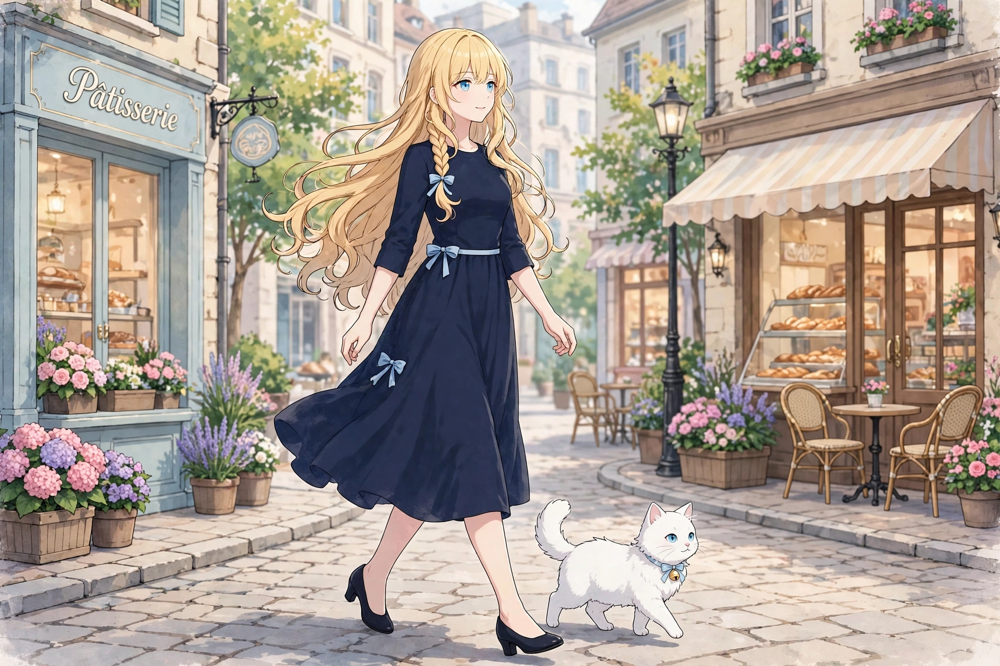
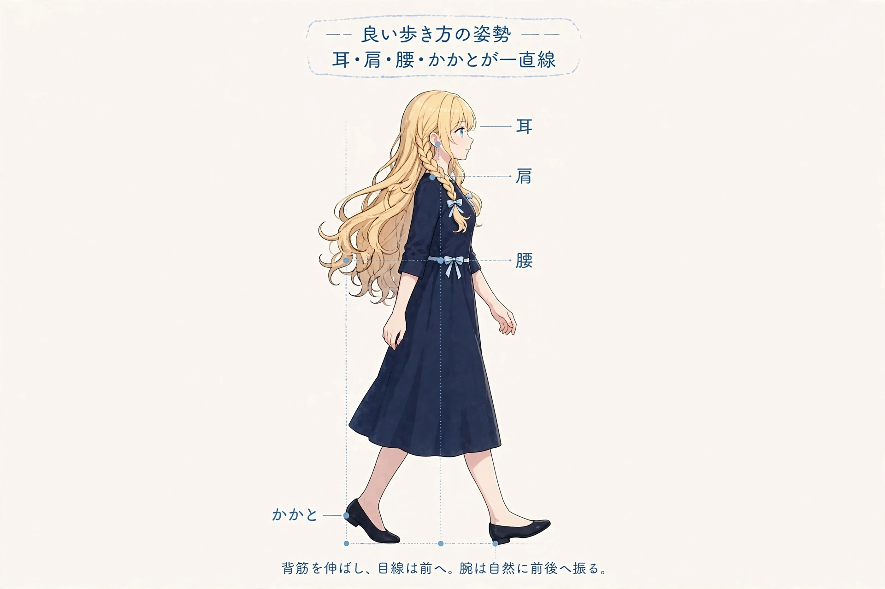
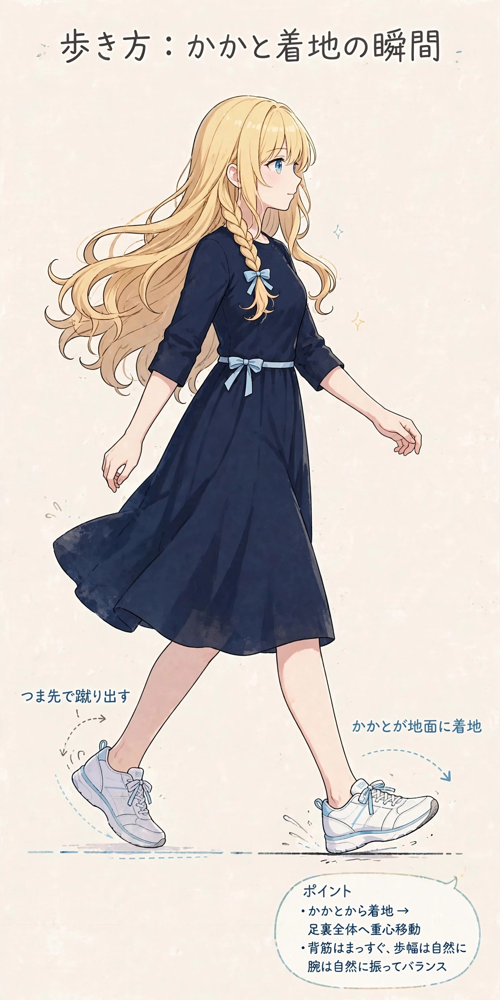

美しく見える歩き方｜姿勢と足の運びの基本（女性）

セラフィナ：歩き方は、服の見え方を大きく左右します。ヒールの高さの前に、姿勢と足の運びの基本をまとめました。
基本1：一直線の姿勢で歩く
耳・肩・腰・かかとが一直線に近づく立ち姿が土台です（図1）。目線は少し先（4〜5m先）を見ると、あごが引けて首が長く見えます。

基本2：足はかかとから
かかとから着地し、足裏全体を通ってつま先で蹴る流れが基本です（図2）。歩幅は無理に広げず、体の真下に足を置く感覚で。腕は前後に小さく振ると、スカートの揺れもきれいに見えます。

靴との関係
歩き方が整っても、合わない靴では続きません。靴側の選び方は歩きやすい靴と疲れにくいバッグの選び方にまとめています。夕方のむくみケアは脚のむくみケアへどうぞ。
この記事のテーマに合う商品
PR：歩きやすい靴（PR）


あわせて読みたい：写真で美しく見えるポージング／トレーニング一覧